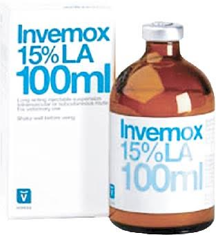

Composition
Each ml contains-
Amoxicillin (trihydrate) 150 mg. Excipient q.s. 1 ml.
Indications
Invemox 15% LA Injection is a broad-spectrum antibiotic. It is indicated for the treatment of the several bacterial diseases in cattle, buffalo, sheep, goat, dog and cat.
Respiratory diseases : Pneumonia, bronchitis, calf diphtheria, sinusitis, Pharyngitis, laryngitis etc.
Reproductive diseases : Metritis, pyometra, postpartum infections, retained placenta, cystitis, orchitis etc.
Urinary tract diseases : Acute renal failure, pyelonephritis, nephritis etc.
GI-Tract diseases : Gastritis, enteritis (Colibacillosis, Salmonellosis), calf scour.
Local bacterial infections : Mastitis, abscess, wounds, bacterial eczema, otitis etc.
Secondary bacterial infections in various viral or parasitic diseases and pre or post-operative antibiotic therapy.
Dosage & Administration
Cattle, Buffalo : 10 ml/100 kg body weight IM or SC injection only.
Sheep, Goat : 1 ml/10 kg body weight IM injection only.
Dogs :1 ml/10 kg body weight IM injection only.
Cats : 0.5 ml/5 kg body weight IM injection only.
Massage the injection site before & after administration.
Dose volumes will not exceed 10 ml (IM) or 25 ml (SC) at the same site.
In general 1 ml/10 kg (equivalent to 15 mg/kg) body weight, repeated if necessary after 48 hours or As directed by the registered veterinarian.
Contraindications/ Precaution
Do not administer via the intravenous or intratracheal route & to animals sensitive to penicillin
Not effective against beta-Iactamase producing organisms.
Side effect
Allergy to amoxicillin may occur rarely. A transient local reaction may occur in the place of injection.
Drug withdrawal period
Meat 30 days & milk 72 hours.
Storage
Keep in dry, cool place. Protect from light. Keep out of reach of children.
Pack size
50 ml and 100 ml Amber glass bottle.